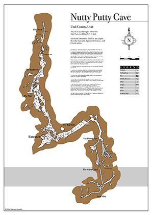
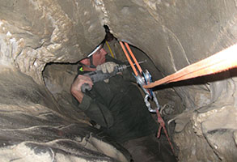

John had had plenty of caving experience, but not recently – most of his spelunking was done when he was a kid – John’s father frequently took him and his younger brother Josh on caving trips all over Utah. Josh wasn’t his only brother: John Edwards Jones was born into a big family of five boys and two girls, he also had 16 nieces and nephews. John was a devout Christian, and according to his family statement later, he was known for his “good nature, delightful sense of humor, strong work ethic, a genuine love of people, a masterful ability to relate to children, a love of and unwavering faith in the Gospel of Jesus Christ, and his commitment to his family as an amazing husband, father, son and brother.” At the time of the accident, John was studying to become a pediatric cardiologist, had recently become a father, and his wife was pregnant with their second child.

On November 24, 2009, the brothers John and Josh decided to rekindle their love for caving and picked Nutty Putty Cave as their next conquest. It was 8 p.m. on Wednesday, just a few days before Thanksgiving when they arrived at the cave site. They weren’t alone: 9 more friends and acquaintances had joined them, so by caving standards, it was quite a large group that finally entered the Nutty Putty Cave. Everything went smooth for an hour or so. The party had explored the largest room in the cave, aptly named the Big Slide. Soon, John, Josh, and two of their friends decided to take up a challenge they had heard about – namely passing through the Birth Canal, a narrow and challenging passageway that eventually opens up into a larger room. John went first: he wriggled forward for some time but did not see any larger area. He continued to inch forward, but the narrow passage did not come to an end; instead, the squeeze made a sharp downward turn. Confidently, John pressed forward, perhaps noticing the tunnel got wider at the bottom, but it was already too late.
It all went wrong 50 feet earlier. It is unclear from the conflicting sources on the internet whether John entered the Birth Canal and accidentally turned and wriggled into the Scout Eater or if he had missed the Birth Canal entirely and crawled into another passageway, just next to the Birth Canal, called Ed’s Push. Now, Ed’s Push does not lead to a larger room. It does not lead anywhere, at least nowhere a 6-foot 200-pound man can fit. Ed’s Push has four uncharted passageways at its end, but they are all too small for a human (if he instead pushed into the Scout Eater, it similarly has a small passageway that doesn’t lead anywhere). In any case, John kept pushing through until he couldn’t continue. To top things off, he had wriggled into a fissure that went nearly straight down, which made him unable to turn back on his own. The narrow crevice he was trapped in measured 10 by 18 inches. This size is comparable to the opening of a front-loading washing machine, except it wasn’t a perfect circle and he was stuck in the tightest part of the opening. Trapped more than 100 feet below the ground, and deep inside the cave, all John could do was wait and pray..
His brother Josh who was following him was the first one to find John. Anxious of how much the rock had swallowed John, Josh tried to pull him out but only managed to inch him up a little. As soon as he let John go, he slid right back into the crevice. John was stuck with one hand pinned underneath him, and the other forced backward. His ankles and feet were free but were of little use as gravity pushed him down. They both said a quick prayer, and Josh hurried back to the ground as fast as he could, slowly wiggling out of the tight passage and rushing to the surface. Once outside, he quickly called for help while their friend stayed with John. The first person to arrive to help, Susan, was a local rescue volunteer who immediately dropped everything she was doing when she received the message on her rescue pager and rushed to the scene with her Toyota. She arrived sometime around midnight – it was now more than three hours since John had been trapped deep inside the cave. Small, agile, and quick, Susan took no time to reach John. “Hi, John, my name is Susie. How’s it going?” “Hi Susie, thanks for coming,” John said, “but I really, really want to get out.”
Within the next few hours, tens and tens of rescuers arrived. The rescue team quickly brainstormed a plan after a plan. They discussed everything – even lubing the walls of the cave – until they decided to use a rescue rope that passes through a series of climbing cams with one end of the rope tied around John’s legs and the other end pulled by the team. At the same time, they also tried drilling away chunks of rock near John, but the hard material and the awkward position made drilling a slow and painful work. In over an hour, they only managed to drill through a couple of inches of rock. The position of John’s body also complicated things. He was trapped nearly upside down, only his feet were visible to the rescuers, and the ceiling above the feet hanged so low the rescuers couldn’t just pull him out as his feet would get in the way. Time passed as rescuers worked frantically and failed with their first system of climbing cams. They then tried to use a rope-pully system, anchoring the pullies with bolts, drilling the bolts deep in the cave walls.

Everything changed when the rescuers finally finished installing their pully system and started pulling John out. They worked in an eight-men tandem, all tugging as one. John was at times in great pain, so they made frequent pauses. But each time they pulled, they managed to pull John up a bit more. After pulling him upwards the third time, John was finally lifted high enough so that he could make eye contact with the rescuer closest to him. He looked tired, his eyes were red, and his face was dirty, but he seemed fine otherwise. “How are you?” “It sucks. I’m upside down. I can’t believe I’m upside down. My legs are killing me.” The rescuer saw that even though John was complaining, he had a smile on his face. They had another rest then decided to continue pulling John up. He was almost out.When the rescue team pulled John upward for the fourth time, something happened. The entire team fell backward as the rope suddenly went loose in their hands. The closest rescuer felt something hard hit his face, and he passed out for a second. When he came to, he saw nothing but dust. Once the dust settled a bit, he realized the stone arch near John’s legs where the rope was tied around had shattered, and the nearest key bolt had broken off. He couldn’t make out in the dust where exactly John was, but soon he realized – John had slid right down the crevice again, this time seemingly even deeper than before.
As the rescuer suffered severe facial injuries from the impact with a metal carabineer and couldn’t continue his rescue efforts, he had to switch places with his dad who was also on the rescue team. When he reached John, he realized that John’s breathing was much more shallow and less frequent, and he was struggling to stay alive. The rescuer called for John but received no response. Desperate, he tried to lower himself into the crevice to put the rope around John’s waist but got stuck himself. After finally wriggling himself free, he drilled a new hole for the pulley and crawled out of the cave, exhausted, to be replaced by yet another rescuer who reached John but couldn’t make contact with him. Soon after, a medical professional crawled into the cave and reached John. At midnight, November 25, John was pronounced dead. He was 26 years old. A total of 137 rescuers worked hard for 27 hours to save John but had to leave the tragic site with empty hands and heavy hearts. One of them told the media this was his toughest rescue in his 29 years of being a search-and-rescue volunteer. The next day, the authorities determined that it was too difficult and dangerous to get his body out of the cave, so Nutty Putty Cave will forever remain the final resting place for John Edwards Jones. A week after, public authorities decided to close Nutty Putty Cave to the public permanently. It has been sealed ever since. John’s family had a plaque put on the entrance of the cave in his memory.